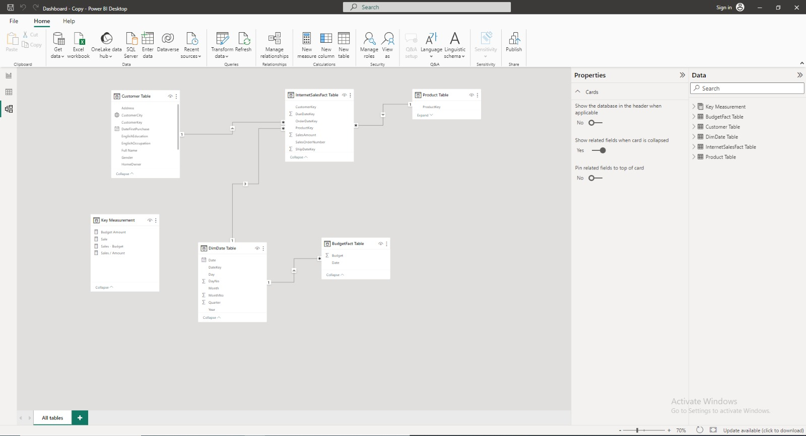

I am pleased to present the culmination of my work, aligning precisely with the business requirements set forth by the CEO, David. In response to the ever-evolving nature of business, our simulated company embarked on a mission to bolster the sales tracking and analysis capabilities. Through diligent efforts and a commitment to David's vision, I have successfully created an Interactive Sales Dashboard. This tool empowers us to make data-driven decisions, track performance against budget, and optimize the internet sales reports. The dashboard serves as a pivotal asset, supporting the quest to enhance sales strategies and gain deeper insights into the market dynamics.
Our project was meticulously executed to meet three core objectives as stipulated by David:
Enhanced Sales Tracking: To deliver an expansive view of our sales performance by offering a comprehensive overview of product sales, client identification, and the ability to track sales trends over time.
Customizable Filters: To cater to the unique needs of our sales team, allowing them to filter and dissect sales efforts based on the products they manage and the customers they serve.
Budget Comparison: To facilitate an evaluation of our sales performance against pre-defined budgets spanning from 2020 to 2022, and to enable comparisons with historical data from the previous three years.
The Interactive Sales Dashboard, crafted in alignment with David's business requirements, incorporates several pivotal features to streamline our sales analysis process:
Product Sales Tracking: The dashboard provides a detailed breakdown of the sales volume for each product. This data is instrumental in identifying top-performing products and optimizing inventory management.
Customer Analysis: By offering insights into our customer base, the dashboard enables tailored sales and marketing strategies to meet the diverse needs and preferences of our client segments.
Time-Based Analysis: The dashboard includes a time-series analysis component, facilitating the tracking of sales performance over time. This feature assists in identifying seasonal trends, evaluating the effectiveness of marketing campaigns, and making proactive adjustments to our sales strategy.
Customizable Filters: Sales representatives can personalize their dashboards, leveraging filters based on the products they handle and the clients they serve. This customization promotes a more focused and efficient sales approach.
Budget Comparison: The dashboard seamlessly integrates budget data from 2020, 2021, and 2022, simplifying the process of comparing actual sales performance against predefined targets. This feature provides valuable insights into our progress and highlights areas that require attention.
The implementation of this dashboard delivers several substantial benefits to our organization:
Data-Driven Decision Making: With real-time access to detailed sales data, our team can make informed decisions to optimize product offerings, target specific customer segments, and enhance overall sales strategies.
Efficiency: Customizable filters empower sales representatives to focus on their areas of expertise, resulting in more efficient and effective sales efforts.
I received an email from the CEO that outlined the challenges the marketing department was facing. Based on this email, I created user stories to define the features and functionality of the project, which will be used to create a roadmap and ensure that it meets the needs of the users and the business requirements. Below is a table of the user stories:
Dear Hussein,
I am writing to propose the implementation of a Sales Analysis Dashboard project, aimed at enhancing our decision-making capabilities and optimizing sales strategies. This project comprises two interconnected dashboards:
Sales Performance Dashboard: Providing insights into sales trends, top customers, budget comparisons, and product analysis.
Customer Demographics Dashboard: Offering valuable data on customer demographics, including city data, gender, status, family, and professions.
Project Goals:
Data-Driven Decisions: Improve our ability to make data-informed decisions.
Sales Strategy Optimization: Enhance sales strategies and identify growth opportunities.
Customer Engagement: Tailor offerings to customer needs and enhance engagement.
Operational Efficiency: Increase efficiency and resource allocation.
Budget Accountability: Ensure fiscal responsibility through budget comparisons.
Historical Analysis: Leverage historical data for long-term trend identification.
Your support in allocating resources for this project would be greatly appreciated. Please let me know if you'd like to discuss this proposal further.
Sincerely,
David
CEO, Texas Sales Rodeo
-Reporter: David _ CEO
-Value of Change: Visual dashboards and improved Sales reporting or follow-up or sales force
-Other Relevant Info: Budgets have been delivered in Excel for 2020-2022
| No# | As a (role) | I want (request/demand) | So that I (user value) | Acceptance Criteria |
|---|---|---|---|---|
| 1 | Sales Manager | To get a dashboard overview of Internet sales | Can follow better which customers and products sell the best | A Power BI dashboard that updates data once a day |
| 2 | Sales Representative | A Detailed Overview of Internet Sales per Customers | Can follow up with my customers who buys the most and whom we can sell more to | A Power BI dashboard that allows me to filter data for each customer |
| 3 | Sales Representative | A detailed overview of Internet Sales per Products | Can follow up my Products that sell the most | A Power BI dashboard that allows me to filter data for each Product |
| 4 | Sales Manager | A dashboard overview of Internet sales | Follow sales overtime against the budget | A Power BI dashboard with graphs and KPIs comparing against the budget. |
| 5 | Sales Manager | A detailed overview of Internet Sales per gender | Can determine better the correct customers for specific gender | A Power BI chart that allows me to show sales per gender |
| 6 | Sales Manager | A detailed overview of Internet Sales per customer’s Number of kids | Can determine the effect of customers’ Number of kids on product purchases using different filters | Power BI charts that allow me to show sales per each Number of kids |
| 7 | Sales Manager | A detailed overview of Internet Sales per customer’s car ownership | Can determine the effect of customers’ car ownership on product purchases using different filters | Power BI charts that allow me to show sales per Number of cars |
| 8 | Sales Manager | A detailed overview of Internet Sales per customer’s profession | Can determine the effect of customers’ profession on product purchases using different filters | Power BI charts that allow me to show sales per profession |
| 9 | Sales Manager | A detailed overview of Internet Sales per customer’s status | Can determine the effect of customers’ status on product purchases using different filters | Power BI charts that allow me to show sales per status |
Under the visionary leadership of CEO David, I have successfully developed two robust data-driven dashboards, meticulously tailored to enhance our sales analysis capabilities. These dashboards empower us with comprehensive insights into the selling process, facilitating data-informed decision-making and strategic optimization.
During the second project phase, I strategically utilized the CRM dataset, thoughtfully
provided by Microsoft, as the cornerstone of our analytical efforts. This dataset served as a rich
source of data for exploration. Leveraging my expertise in database management, I meticulously
collected and refined this dataset using SQL Server Management Studio.
To illustrate, here are
some pivotal SQL queries that played a central role in our data collection and
preparation:
Data Extraction:
I crafted SQL queries to extract relevant information from the
CRM dataset.
Data Transformation:
I applied SQL transformations to aggregate and format the
data.
Data Joining:
I utilized SQL joins to merge data from different tables.
This project phase underscored my proficiency in database management, SQL query development, and data preparation. These skills were instrumental in transforming raw data into the foundation for our successful sales analysis dashboard, facilitating actionable insights.
-- Create DimCustomer table
-- Renaming the tables using AS function
-- Utilizing the CASE statment to convert the decoded values into readable values
-- Utilizing the sequared brackets to make spacing with names in some of columns names
SELECT
c.customerkey AS [CustomerKey],
-- customerkey to connect this dimensional table with the fact table
-- Utilizing the sequared brackets to make spacing with names in some of columns names
c.firstname + ' ' + c.lastname AS [Full Name],
[MaritalStatus],
CASE c.gender WHEN 'M' THEN 'MALE' WHEN 'F' THEN 'Female' END AS Gender,
-- Utilizing CASE statement to convert the decoded values into readable & Understandable values
-- by the stakeholders
-- [YearlyIncome],
-- [NumberChildrenAtHome],
-- [EnglishEducation],
-- [EnglishOccupation],
-- CASE c.HouseOwnerFlag WHEN 1 THEN 'Owner' WHEN 0 THEN 'Not Owner' END AS HomeOwner,
-- Utilizing Case Statement to show the decoded values of HouseOwnerFlag into readable values
-- [NumberCarsOwned],
[AddressLine1] AS Address,
c.datefirstpurchase AS DateFirstPurchase,
-- Rename the table name
g.city AS [CustomerCity] -- To study the active area and which city is the most purchase by
joing
both tables
-- DimCustomer & DimGeography using the gommon key GeographyKey
FROM
[dbo].[DimCustomer] AS c -- Rename the table by giving it an alias name (c)
LEFT JOIN dbo.DimGeography AS g ON g.GeographyKey = c.GeographyKey -- Joining statement
ORDER BY
CustomerKey ASC -- To order the result based on the CustomerKey (Ascending)
-- Cleaning Dimdate table and selecting the interesting attributes for our business process
SELECT
[DateKey],
[FullDateAlternateKey] AS Date,
LEFT ([EnglishDayNameOfWeek], 3) AS Day,
-- Left function is used to grap the first three letters of the day
[WeekNumberOfYear] AS Week,
LEFT([EnglishMonthName], 3) AS Month,
-- Left function is used to grap the first three letters of the name of the month
[MonthNumberOfYear] AS MonthNumber,
[CalendarQuarter] AS Quarter,
[CalendarYear] As Year
FROM
[AdventureWorksDW2019].[dbo].[DimDate]
WHERE [CalendarYear] >= 2019
-- The buisness requirement is the dashbaord overview for the last five years against the budget
-- Creating DimProduct table
/**
To capture the business requirement (Sales per Product) I have selected the
intresting features that could help us to retrieve some insights for instance
color, size ..etc.
I also used joining functions to present the sales per category or subcategory
**/
/**
I will be joing with Category & subcategory tables to get
Product cagtegory name
Product subcategory name
Renaming columns with keeping distances using sequred brackets
**/
/**
Here also I have appleid some data cleasing to
showcase of some techniques in SQL to clean and present the data clearly
In Status feature I converted the NULL values into (Outdated)
**/
SELECT
p.[ProductKey],
p.[ProductAlternateKey] AS ProductItemCode,
p.[EnglishProductName] AS [Product Name],
-- Using sequared brckets becasue we want to make space between the name parts
p.[Color] AS [Product Color],
p.[SafetyStockLevel],
p.[ReorderPoint],
p.[Size] AS [Product Size],
p.[Weight] AS [Product Weight],
p.[DaysToManufacture],
p.[ProductLine] AS [Product Line],
p.[ModelName] AS [Product Model Name],
p.[EnglishDescription] AS [Product Description],
-- Utilizing ISNULL function to deal with NULL values
ISNULL (p.Status, 'Outdated') AS [ Product Status],
ps.EnglishProductSubcategoryName AS [Product Sub Category],
pc.EnglishProductCategoryName AS [Product Category]
FROM [dbo].[DimProduct] AS p
-- To get ProductSubcategoryKey I used:
-- Joining DimProduct table with DimProductSubcategory using LEFT JOIN function
LEFT JOIN dbo.DimProductSubcategory AS ps
ON ps.ProductSubcategoryKey = p.ProductSubcategoryKey
-- To get ProductCategoryKey I used:
-- Joining DimProductSubcategory with DimProductCategory using LEFT JOIN function
LEFT JOIN dbo.DimProductCategory AS pc
ON ps.ProductCategoryKey = pc.ProductCategoryKey
-- Order the Product table ( based on ProductKey) using ORDER BY function:
ORDER BY p.ProductKey
-- Creating Fact table
/** Fact table is created based on the business process and the numeric measure answer
What are we looking to measure from these measure OR What we want to find questions
Each business process needs specific fact table
**/
/** I kept the keys that are related to the dimension tables in DW
Other keys are not required so I removed them from the DW to reduc the size and
optimize the query performance
**/
/** -----IMPOTANT NOTE-----
Since the business requirements need to look at five years before agianst the budget
so I filtered out the result to show only the last five years data by using :
GETDATE() function --- to show todays date
then I substracted the recored's date from today's date
I got the record's date by grapping the the first four digits of the OrdreDateKey attribute
**/
use [AdventureWorksDW2019];
SELECT
[ProductKey],
[OrderDateKey],
[DueDateKey],
[ShipDateKey],
[CustomerKey],
[SalesOrderNumber],
[SalesAmount]
FROM [dbo].[FactInternetSales]
-- Filtering out the data according to the business requirements using GETDATE(), YEAR(), &
LEFT()
Functions:
WHERE LEFT(OrderDateKey, 4) >= YEAR(GETDATE()) - 4
-- Ordering the resulted table by OrderDateKey (Ascending)
ORDER BY OrderDateKey ASC
After meticulously gathering and refining the data using SQL Server Management Studio, I performed data modeling to establish relationships between tables and determine the cardinalities accordingly.
Sales Performance Dashboard:
This dashboard provides a deep dive into sales performance, offering insights into customer city
dynamics over time via an interactive time-series line chart. It also spotlights our top 5
customers, presents a clear sale versus budget comparison, and categorizes products and
sub-categories for precise analysis.
This second dashboard unveils valuable insights into our client base. It features an interactive city map, gender and status pie charts, details on the number of children and car ownership, and a comprehensive view of our customers' professions.
Both dashboards are fortified with versatile slicers, enabling effortless data filtering by year, month, product category, customer city, and sub-category. This dynamic feature empowers users to tailor their analyses, gaining deeper insights into specific aspects of our business.
User-Centric Design Philosophy: Customized dashboards to meet unique business requirements, enhancing usability.
Data Analysis Mastery: Profound expertise in dissecting and interpreting sales data, facilitating informed decision-making.
Dashboard Development Excellence: Skillfully designed and engineered interactive dashboards, optimizing user experience.
Mastering Data Visualization: Effectively conveyed complex data trends through intuitive charts, maps, and slicers.
Empowering Data Filtering: Implemented slicers to facilitate precise data filtration, ensuring accessibility to relevant information.
Customer-Centric Focus: Shined a spotlight on critical aspects of customer demographics and sales performance, reinforcing our commitment to delivering exceptional customer experiences.
Technical Expertise: Demonstrated prowess in utilizing advanced data analysis and visualization tools, harnessing data effectively.
In collaboration with CEO David's visionary leadership, these dashboards will play a
pivotal role in our journey toward making more informed decisions, optimizing sales strategies, and
strengthening customer engagement. This project underscores our unwavering commitment to excellence
and innovation in the field of data analysis and business intelligence.
The inclusion of budget
accountability and historical analysis further ensures fiscal responsibility and strategic alignment
with past performance, making these dashboards an invaluable asset for our organization's continued
growth and success.
Following this critical data modeling step, I exported the resulting tables into Excel sheets. These Excel sheets served as the foundation for the next stage of our project, where we leveraged Power BI to perform ETL (Extract, Transform, Load) processes and initiate the creation of our interactive dashboards.
With the data meticulously prepared and ETL processes executed, I proceeded to create and showcase the interactive dashboards using Power BI. These dashboards were designed to provide insightful visualizations, enabling us to track sales performance, customer demographics, and other key metrics. Through these intuitive dashboards, we gained valuable insights, facilitating data-driven decision-making and strategic optimization.
Click here to visit the interactive dashboard